We continue to follow the notational convention of Chapter 1
and
denote by  ,
,  ,
,  ,
,
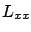
,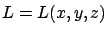
. To keep things simple, we assume that all derivatives appearing in our calculations exist and are continuous. While we will not focus on spelling out the weakest possible regularity assumptions on
Let  be a given test curve in
be a given test curve in  .
For a
perturbation
.
For a
perturbation
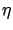
in (2.10) to be admissible, the new curve (2.10) must again satisfy the boundary conditions (2.8). Clearly, this is true if and only if
Recall that the first variation
 was defined via
was defined via
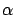
by expanding the expression inside the integral with the help of the chain rule:
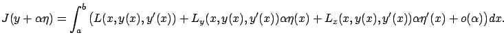
Matching this with the right-hand side of (2.12), we deduce that the first variation is

and using differentiation under the integral sign on the right-hand side of (2.13).
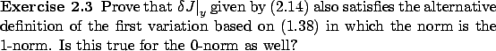
We see that the first variation depends not just on
but also on  . This is not
surprising since
. This is not
surprising since  has
has
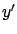
as one of its arguments. However, we can eliminate the dependence on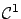
curves vanishing at the endpoints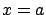
and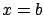
.
The condition (2.16) does not yet give us a practically useful test for optimality, because we would need to check it for all admissible perturbations
. However, it is logical to suspect that the only way (2.16) can hold is if the term inside the parentheses--which does not depend on
--equals 0 for all  . The next lemma shows that this is indeed the case.
. The next lemma shows that this is indeed the case.
PROOF. Suppose that
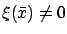
for some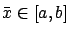
. By continuity,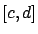
containing
Construct a function
 that is positive on
that is positive on  and 0 everywhere else (see Figure 2.7). For example, we can set
and 0 everywhere else (see Figure 2.7). For example, we can set
 for
for  and
and
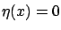
otherwise. This givesIt follows from (2.16) and Lemma 2.1 that for
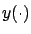
to be an extremum, a necessary condition is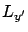
, then one plugs in for these variables the position
The functional  to be minimized is given by the integral of the Lagrangian
to be minimized is given by the integral of the Lagrangian  along a path, while the Euler-Lagrange equation
involves
derivatives of
along a path, while the Euler-Lagrange equation
involves
derivatives of  and must hold for every point on the optimal path;
observe that the integral
has disappeared. The underlying reason is that if a path is optimal, then every
infinitesimally small portion
of it is optimal as well (no ``shortcuts" are possible). The exact mechanism
by which we pass from the statement that the integral is minimized to the pointwise
condition is revealed by Lemma 2.1 and its proof.
and must hold for every point on the optimal path;
observe that the integral
has disappeared. The underlying reason is that if a path is optimal, then every
infinitesimally small portion
of it is optimal as well (no ``shortcuts" are possible). The exact mechanism
by which we pass from the statement that the integral is minimized to the pointwise
condition is revealed by Lemma 2.1 and its proof.
Trajectories satisfying the Euler-Lagrange equation (2.18) are called extremals. Since the Euler-Lagrange equation is only a necessary condition for optimality, not every extremal is an extremum. We see from (2.19) that the equation (2.18) is a second-order differential equation; thus we expect that generically, the two boundary conditions (2.8) should be enough to specify a unique extremal. When this is true--as is the case in the above example--and when an optimal curve is known to exist, we can actually conclude that the unique extremal gives the optimal solution. In general, the question of existence of optimal solutions is not trivial, and the following example should serve as a warning. (We will come back to this issue later in the context of optimal control.)
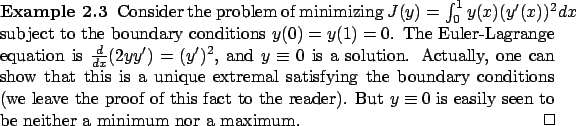


![\begin{Lemma}
If a continuous function $\xi:[a,b]\to\mathbb{R}$\ is such that
\b...
...:[a,b]\to\mathbb{R}$\ with
$\eta(a)=\eta(b)=0$, then $\xi\equiv 0$.
\end{Lemma}](img371.gif)